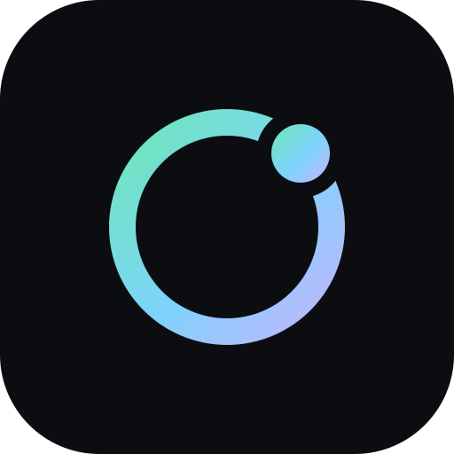

A collection of readable agent infrastructure and practical developer tools. Each project is small enough to understand, build, and run from source.
一组可读的 agent 基础设施与实用开发工具。每个项目都可以从源码理解、构建并运行。
A line-by-line walkthrough of a minimal agent: message list, tool dispatch, and termination.
逐段拆解最小 agent：消息列表、工具派发与终止条件。
Agent infrastructure plus focused tools for everyday engineering work.
Agent 基础设施，以及面向日常工程任务的专注工具。
A lightweight AI coding assistant with agent loops, modular tools, sandboxing, TUI and daemon modes, swarm multi-agent, and MCP.
轻量级 AI 编程助手，包含 agent loop、模块化工具、沙箱、TUI 与 daemon 模式、swarm 多智能体和 MCP。
Issue-driven orchestration for coding agents with isolated workspaces, plan runs, SQLite state, MCP callbacks, and a web dashboard.
面向 coding agent 的 issue 驱动编排，支持隔离工作区、plan run、SQLite 状态、MCP 回调和 Web 仪表盘。
Distributed execution for coding agents with gateway/worker architecture, Docker isolation, pairing-based onboarding, and an admin console.
coding agent 的分布式执行，采用 gateway/worker 架构、Docker 隔离、配对接入和管理控制台。
Multi-language code change impact analysis with call graphs, affected tests, public contract diffs, and risk reports.
多语言代码变更影响分析，提供调用图、受影响测试、公共契约 diff 和风险报告。
Prepare real Git worktree directories for multi-repository workspaces with local and remote sources, diagnostics, and editor integration.
为多仓库工作区准备真实 Git worktree 目录，支持本地与远程源、诊断和编辑器集成。
Fast, low-memory source-code search with sparse n-grams, inverted indexes, literal and regex queries, and Git-aware incremental overlays.
基于稀疏 n-gram 的快速低内存源码搜索，支持倒排索引、字面量与正则查询，以及 Git 感知的增量 overlay。
Each layer has a focused responsibility and a readable implementation.
每一层都有明确职责和可读实现。
| Layer | 分层 | Projects | 项目 |
|---|---|---|---|
| Agent loop & tools | Single-agent execution, tools, context, permissions, and MCP. | 单 agent 执行、工具、上下文、权限和 MCP。 | nano-agent |
| Orchestration | Issue-driven plans, isolated workspaces, retries, and observable runs. | issue 驱动计划、隔离工作区、重试和可观测运行。 | nano-symphony |
| Distributed runtime | Remote execution with container isolation and runtime policies. | 容器隔离与运行策略驱动的远程执行。 | nano-cloud |
| Engineering tools | Change analysis, workspace preparation, and fast code search. | 变更分析、工作区准备和快速代码搜索。 | impact-analyzer · virtual-workspace · sparse-ngram-search |
Every project can be cloned, built, and tested locally without a hosted release service.
所有项目都可以本地克隆、构建和测试，不依赖托管发布服务。